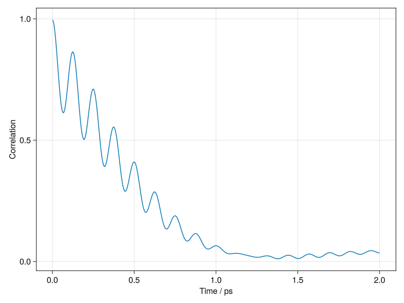

Molly documentation
This documentation will first introduce the main features of the package with some examples, then will give details on each component of a simulation. There are further examples in the Molly examples section. For more information on specific types or functions, see the Molly API section or call ?function_name in Julia. The Differentiable simulation with Molly section describes taking gradients through simulations.
The package takes a modular approach to molecular simulation. To run a simulation you create a System object and call simulate! on it. The different components of the system and simulation can be used as defined by the package, or you can define your own versions. An important principle of the package is that your custom components, particularly force and potential energy functions, should be easy to define and just as performant as the built-in versions.
Simulation basics
Let's look at the simulation of a fluid acting under the Lennard-Jones potential to start with. First, we'll need some atoms with the relevant parameters defined.
using Molly
n_atoms = 100
atom_mass = 10.0u"g/mol"
atoms = [Atom(mass=atom_mass, σ=0.3u"nm", ϵ=0.2u"kJ * mol^-1") for i in 1:n_atoms]See the Unitful.jl documentation for more information on the unit annotations. Molly re-exports Unitful.jl and StaticArrays.jl since they are often required to run simulations. You can use your own atom types in Molly, provided that the mass function is defined and any fields required by the interactions are present. Next, we'll need some starting coordinates and velocities.
boundary = CubicBoundary(2.0u"nm") # Periodic boundary conditions with a 2 nm cube
coords = place_atoms(n_atoms, boundary; min_dist=0.3u"nm") # Random placement without clashing
temp = 100.0u"K"
velocities = [random_velocity(atom_mass, temp) for i in 1:n_atoms]We store the coordinates and velocities as static arrays for performance. They can be of 2 or 3 dimensions and of any number type, e.g. Float64 or Float32. Setting individual dimensions in a CubicBoundary to Inf * u"nm" makes the simulation have no boundary in that dimension. You can also use a TriclinicBoundary. Simulations in 2 dimensions should use a RectangularBoundary.
The vector function calculates the vector from one coordinate to another accounting for periodic boundary conditions by using the minimum image convention:
vector(coords[1], coords[2], boundary)3-element SVector{3, Quantity{Float64, ùêã, Unitful.FreeUnits{(nm,), ùêã, nothing}}} with indices SOneTo(3):
-0.8619698558762985 nm
-0.9475020064484192 nm
0.8359421827141784 nmNow we can define our pairwise interactions, i.e. those between most or all atom pairs. Because we have defined the relevant parameters for the atoms, we can use the built-in LennardJones type.
pairwise_inters = (LennardJones(),) # Don't forget the trailing comma!Finally, we can define the system and run the simulation. We use an AndersenThermostat to keep a constant temperature, and we log the temperature and coordinates every 10 steps. Periodic boundary conditions are automatically used with the cubic box we defined earlier.
sys = System(
atoms=atoms,
coords=coords,
boundary=boundary,
velocities=velocities,
pairwise_inters=pairwise_inters,
loggers=(
temp=TemperatureLogger(10),
coords=CoordinatesLogger(10),
),
)
simulator = VelocityVerlet(
dt=0.002u"ps",
coupling=AndersenThermostat(temp, 1.0u"ps"),
)
simulate!(sys, simulator, 1_000)atoms, coords and boundary are the minimum required properties to define a System, though you would generally want to add interactions to a System to do something useful with it. The data keyword argument can give arbitrary data to the System that can be accessed with sys.data, for example metadata or properties to be used with a custom simulator. System implements the AbstractSystem interface from AtomsBase.jl. Various functions can be used on a System:
potential_energy(sys) # -40.91077282719628 kJ mol^-1
kinetic_energy(sys) # 119.47758705080862 kJ mol^-1
total_energy(sys) # 78.56681422361234 kJ mol^-1
forces(sys)
accelerations(sys)
masses(sys)
density(sys) # 207.56738339673083 kg m^-3
temperature(sys) # 96.76667184796673 K
random_velocities(sys, 300.0u"K")
float_type(sys) # Float64
is_on_gpu(sys) # false
# Access properties
sys.atoms
sys.coords
sys.boundary
sys.velocities
sys.topology
sys.pairwise_inters
sys.constraints
sys.neighbor_finder
sys.loggers
# For certain systems
virial(sys)
pressure(sys)
dipole_moment(sys)
# AtomsBase.jl interface
import AtomsBase
AtomsBase.mass(sys, 5) # 10.0 u
AtomsBase.position(sys, 10)
# Define a new system with certain properties changed
System(sys; coords=(sys.coords .* 0.5))By default the simulation is run in parallel on the number of threads available to Julia, but this behaviour can be changed by giving the keyword argument n_threads to simulate!. For example, n_threads=1 uses no parallelization.
The values stored by the loggers can be accessed using values, e.g. values(sys.loggers.coords). An animation of the stored coordinates can be saved by using visualize, which is available when GLMakie.jl is imported.
using GLMakie
visualize(sys.loggers.coords, boundary, "sim_lj.mp4")
GPU acceleration
To run simulations on the GPU you will need to have a CUDA-compatible device. CUDA.jl is used to run on the device. Simulation setup is similar to above, but with the coordinates, velocities and atoms moved to the GPU. This example also shows setting up a simulation to run with Float32, which gives better performance on GPUs. Of course, you will need to determine whether this level of numerical accuracy is appropriate in your case.
using Molly
using CUDA
n_atoms = 100
atom_mass = 10.0f0u"g/mol"
boundary = CubicBoundary(2.0f0u"nm")
temp = 100.0f0u"K"
atoms = CuArray([Atom(mass=atom_mass, σ=0.3f0u"nm", ϵ=0.2f0u"kJ * mol^-1") for i in 1:n_atoms])
coords = CuArray(place_atoms(n_atoms, boundary; min_dist=0.3u"nm"))
velocities = CuArray([random_velocity(atom_mass, temp) for i in 1:n_atoms])
simulator = VelocityVerlet(dt=0.002f0u"ps")
sys = System(
atoms=atoms,
coords=coords,
boundary=boundary,
velocities=velocities,
pairwise_inters=(LennardJones(),),
loggers=(
temp=TemperatureLogger(typeof(1.0f0u"K"), 10),
coords=CoordinatesLogger(typeof(1.0f0u"nm"), 10),
),
)
simulate!(deepcopy(sys), simulator, 20) # Compile function
simulate!(sys, simulator, 1_000)The device to run on can be changed with device!, e.g. device!(1). The GPU code path is currently designed to be compatible with differentiable simulation and runs slower than related software, but this is an active area of development. Nonetheless, GPU performance is significantly better than CPU performance and is good enough for many applications.
The number of GPU threads used for the GPU kernels can be tuned with the environmental variables MOLLY_GPUNTHREADS_PAIRWISE, MOLLY_GPUNTHREADS_SPECIFIC, MOLLY_GPUNTHREADS_DISTANCENF and MOLLY_GPUNTHREADS_IMPLICIT. In general these should only be changed if GPU memory errors occur on smaller GPUs.
Simulating diatomic molecules
If we want to define specific interactions between atoms, for example bonds, we can do this as well. Using the same definitions as the first example, let's set up the coordinates so that paired atoms are 1 √Ö apart.
atoms = [Atom(mass=atom_mass, σ=0.3u"nm", ϵ=0.2u"kJ * mol^-1") for i in 1:n_atoms]
coords = place_atoms(n_atoms ÷ 2, boundary; min_dist=0.3u"nm")
for i in 1:length(coords)
push!(coords, coords[i] .+ [0.1, 0.0, 0.0]u"nm")
end
velocities = [random_velocity(atom_mass, temp) for i in 1:n_atoms]We could have used place_diatomics instead here. Now we can use the built-in interaction list and bond types to place harmonic bonds between paired atoms.
bonds = InteractionList2Atoms(
collect(1:(n_atoms ÷ 2)), # First atom indices
collect((1 + n_atoms ÷ 2):n_atoms), # Second atom indices
[HarmonicBond(k=300_000.0u"kJ * mol^-1 * nm^-2", r0=0.1u"nm") for i in 1:(n_atoms ÷ 2)],
)
specific_inter_lists = (bonds,)This time we are also going to use a neighbor list to speed up the Lennard-Jones calculation since we don't care about interactions beyond a certain distance. We can use the built-in DistanceNeighborFinder. The arguments are a 2D array of eligible interacting pairs, the number of steps between each update and the distance cutoff to be classed as a neighbor. Since the neighbor finder is run every 10 steps we should also use a distance cutoff for the neighbor list that is larger than the cutoff for the interaction.
# All pairs apart from bonded pairs are eligible for non-bonded interactions
eligible = trues(n_atoms, n_atoms)
for i in 1:(n_atoms ÷ 2)
eligible[i, i + (n_atoms ÷ 2)] = false
eligible[i + (n_atoms ÷ 2), i] = false
end
neighbor_finder = DistanceNeighborFinder(
eligible=eligible,
n_steps=10,
dist_cutoff=1.5u"nm",
)
cutoff = DistanceCutoff(1.2u"nm")
pairwise_inters = (LennardJones(use_neighbors=true, cutoff=cutoff),)Now we can simulate as before.
sys = System(
atoms=atoms,
coords=coords,
boundary=boundary,
velocities=velocities,
pairwise_inters=pairwise_inters,
specific_inter_lists=specific_inter_lists,
neighbor_finder=neighbor_finder,
loggers=(
temp=TemperatureLogger(10),
coords=CoordinatesLogger(10),
),
)
simulator = VelocityVerlet(
dt=0.002u"ps",
coupling=AndersenThermostat(temp, 1.0u"ps"),
)
simulate!(sys, simulator, 1_000)This time when we view the trajectory we can add lines to show the bonds.
visualize(
sys.loggers.coords,
boundary,
"sim_diatomic.mp4";
connections=[(i, i + (n_atoms ÷ 2)) for i in 1:(n_atoms ÷ 2)],
) The neighbors can be found using
The neighbors can be found using find_neighbors(sys), which returns a NeighborList. When using a neighbor finder, functions such as forces and potential_energy require the neighbors to be passed as a second argument, e.g. forces(sys, find_neighbors(sys)).
Simulating gravity
Molly is geared primarily to molecular simulation, but can also be used to simulate other physical systems. Let's set up a gravitational simulation. This example also shows a 2D simulation and no specified units.
atoms = [Atom(mass=1.0f0), Atom(mass=1.0f0)]
coords = [SVector(0.3f0, 0.5f0), SVector(0.7f0, 0.5f0)]
velocities = [SVector(0.0f0, 1.0f0), SVector(0.0f0, -1.0f0)]
pairwise_inters = (Gravity(use_neighbors=false, G=1.5f0),)
simulator = VelocityVerlet(dt=0.002f0)
boundary = RectangularBoundary(1.0f0)
sys = System(
atoms=atoms,
coords=coords,
boundary=boundary,
velocities=velocities,
pairwise_inters=pairwise_inters,
loggers=(coords=CoordinatesLogger(Float32, 10; dims=2),),
force_units=NoUnits,
energy_units=NoUnits,
)
simulate!(sys, simulator, 2_000)When we view the simulation we can use some extra options:
visualize(
sys.loggers.coords,
boundary,
"sim_gravity.mp4";
trails=4,
framerate=15,
color=[:orange, :lightgreen],
)
Simulating a protein
The recommended way to run a macromolecular simulation is to read in a force field in OpenMM XML format to a MolecularForceField and then read in a coordinate file in a format supported by Chemfiles.jl. Files for common force fields can be found at OpenMM and OpenMM force fields. This sets up a system in the same data structures as above and that is simulated in the same way. Here we carry out an energy minimization, simulate with a Langevin integrator in the NPT ensemble and use a StructureWriter to write the trajectory as a PDB file.
data_dir = joinpath(dirname(pathof(Molly)), "..", "data")
ff = MolecularForceField(
joinpath(data_dir, "force_fields", "ff99SBildn.xml"),
joinpath(data_dir, "force_fields", "tip3p_standard.xml"),
joinpath(data_dir, "force_fields", "his.xml"),
)
sys = System(
joinpath(data_dir, "6mrr_equil.pdb"),
ff;
loggers=(
energy=TotalEnergyLogger(10),
writer=StructureWriter(10, "traj_6mrr_1ps.pdb", ["HOH"]),
),
gpu=false,
)
minimizer = SteepestDescentMinimizer()
simulate!(sys, minimizer)
temp = 298.0u"K"
random_velocities!(sys, temp)
simulator = Langevin(
dt=0.001u"ps",
temperature=temp,
friction=1.0u"ps^-1",
coupling=MonteCarloBarostat(1.0u"bar", temp, sys.boundary),
)
simulate!(sys, simulator, 5_000)The OpenMM setup procedure is tested against OpenMM in terms of matching forces and energies. However it is not thoroughly tested with respect to ligands or special residues and requires that atom names exactly match residue templates. By default, terminal residues are renamed to match the appropriate templates. For example, the first (N-terminal) residue could be changed from "MET" to "NMET". This can be turned off by giving rename_terminal_res=false to System if the residue names in the input file are appropriate. Currently atom classes are not supported, only atom types. Residue patches, virtual sites, file includes and any force types other than HarmonicBondForce/HarmonicAngleForce/PeriodicTorsionForce/NonbondedForce are currently ignored.
Future work will increase the features and robustness when reading in structure files. In the mean time, the following tips may help you to read in a file correctly and without errors:
- Make sure there are no missing residues or heavy atoms. Tools such as MODELLER and SCWRL4 can fix these issues.
- Remove the hydrogen atoms and add them back using OpenMM, which will ensure they have atom names compatible with the OpenMM force field files.
- Make sure that all residue names match the corresponding residue template name and that all atom names match the appropriate atom in the residue template.
- Non-standard residues also require
CONECTrecords for Chemfiles to assign bonds correctly, see for example a compatible alanine dipeptide file.
Some PDB files that read in fine can be found here.
To run on the GPU, set gpu=true. You can use an implicit solvent method by giving the implicit_solvent keyword argument to System. The options are "obc1", "obc2" and "gbn2", corresponding to the Onufriev-Bashford-Case GBSA model with parameter set I or II and the GB-Neck2 model. Other options include overriding the boundary dimensions in the file (boundary) and modifying the non-bonded interaction and neighbor list cutoff distances (dist_cutoff and dist_neighbors).
Molly also has a rudimentary parser of Gromacs topology and coordinate files. For example:
sys = System(
joinpath(dirname(pathof(Molly)), "..", "data", "5XER", "gmx_coords.gro"),
joinpath(dirname(pathof(Molly)), "..", "data", "5XER", "gmx_top_ff.top");
loggers=(
temp=TemperatureLogger(10),
writer=StructureWriter(10, "traj_5XER_1ps.pdb"),
),
)
temp = 298.0u"K"
random_velocities!(sys, temp)
simulator = Verlet(
dt=0.0002u"ps",
coupling=BerendsenThermostat(temp, 1.0u"ps"),
)
simulate!(sys, simulator, 5_000)Harmonic position restraints can be added to a System for equilibration using add_position_restraints:
sys_res = add_position_restraints(
sys,
100_000.0u"kJ * mol^-1 * nm^-2";
atom_selector=is_heavy_atom,
)The Gromacs setup procedure should be considered experimental. Currently Ewald summation methods, constraint algorithms and high GPU performance are missing from the package, so Molly is not suitable for production simulations of biomolecules. Stay tuned for developments in this area.
Enhanced sampling
Molly has the ReplicaSystem struct and simulators such as TemperatureREMD to carry out replica exchange molecular dynamics (REMD). On CPU these are run in parallel by dividing up the number of available threads. For example, to run temperature REMD on a protein with 4 replicas and attempt exchanges every 1 ps:
using Statistics
data_dir = joinpath(dirname(pathof(Molly)), "..", "data")
ff = MolecularForceField(
joinpath(data_dir, "force_fields", "ff99SBildn.xml"),
joinpath(data_dir, "force_fields", "tip3p_standard.xml"),
joinpath(data_dir, "force_fields", "his.xml"),
)
sys = System(joinpath(data_dir, "6mrr_equil.pdb"), ff)
minimizer = SteepestDescentMinimizer()
simulate!(sys, minimizer)
n_replicas = 4
rep_sys = ReplicaSystem(
atoms=sys.atoms,
replica_coords=[copy(sys.coords) for _ in 1:n_replicas],
boundary=sys.boundary,
n_replicas=n_replicas,
atoms_data=sys.atoms_data,
pairwise_inters=sys.pairwise_inters,
specific_inter_lists=sys.specific_inter_lists,
general_inters=sys.general_inters,
neighbor_finder=sys.neighbor_finder,
replica_loggers=[(temp=TemperatureLogger(10),) for _ in 1:n_replicas],
)
temps = [240.0u"K", 280.0u"K", 320.0u"K", 360.0u"K"]
dt = 0.0005u"ps"
simulators = [Langevin(dt=dt, temperature=temp, friction=1.0u"ps^-1") for temp in temps]
sim = TemperatureREMD(
dt=dt,
temperatures=temps,
simulators=simulators,
exchange_time=1.0u"ps",
)
simulate!(rep_sys, sim, 40_000; assign_velocities=true)
println(rep_sys.exchange_logger.n_attempts)
# 30
for i in 1:n_replicas
final_temps = values(rep_sys.replicas[i].loggers.temp)[(end - 10):end]
println(mean(final_temps))
end
# 240.1691457033836 K
# 281.3783250460198 K
# 320.44985840482974 K
# 357.710520769689 KMonte Carlo sampling
Molly has the MetropolisMonteCarlo simulator to carry out Monte Carlo sampling with Metropolis selection rates. For example, to perform simulated annealing on charged particles to form a crystal lattice:
n_atoms = 100
atoms = [Atom(mass=10.0u"g/mol", charge=1.0) for i in 1:n_atoms]
boundary = RectangularBoundary(4.0u"nm")
coords = place_atoms(n_atoms, boundary; min_dist=0.2u"nm")
pairwise_inters = (Coulomb(),)
temperatures = [1198.0, 798.0, 398.0, 198.0, 98.0, 8.0]u"K"
sys = System(
atoms=atoms,
coords=coords,
boundary=boundary,
pairwise_inters=pairwise_inters,
loggers=(
coords=CoordinatesLogger(n_atoms, dims=2),
montecarlo=MonteCarloLogger(),
),
)
trial_args = Dict(:shift_size => 0.1u"nm")
for t in temperatures
sim = MetropolisMonteCarlo(;
temperature=t,
trial_moves=random_uniform_translation!,
trial_args=trial_args,
)
simulate!(sys, sim, 10_000)
end
println(sys.loggers.montecarlo.n_accept)
# 15234
visualize(sys.loggers.coords, boundary, "sim_montecarlo.gif")
trial_moves should be a function that takes a System as its argument and optional keyword arguments trial_args. It should modify the coordinates as appropriate, accounting for any boundary conditions. random_uniform_translation! and random_normal_translation! are provided as common trial move functions. MonteCarloLogger records various properties throughout the simulation.
Units
Molly is fairly opinionated about using Unitful.jl units as shown above: you don't have to use them, but it is better if you do. Any consistent unit scheme can be used, or no units at all. Molly is most strict about the mixture of molar and non-molar types. For example, if your energy and force units are molar then your atom masses should be g/mol or similar. If you are not using units then no quantities can have Unitful annotations and you are responsible for ensuring a consistent unit system. Whilst you occasionally may run into friction with dimension mismatches, using units has the major advantages of catching whole classes of errors and letting you physically interpret the numbers in your system. The performance overhead of using units is minimal. Units are not currently compatible with differentiable simulations.
All your interaction types need to return the same units of force and energy or the simulation will not run. By default these are kJ * mol^-1 * nm^-1 for force and kJ * mol^-1 for energy, but this can be changed using the force_units and energy_units arguments to System and some interactions. These arguments should be NoUnits if you are not using units. If you need to strip units for downstream analysis, use the ustrip or ustrip_vec functions. It should be noted that charges are stored as dimensionless, i.e. 1.0 represents an atomic charge of +1.
Atom types
Molly has a built-in Atom type with a few properties commonly used in molecular simulation defined. The mass and charge functions can be used on an Atom. Custom atom types can be used just as effectively provided that either the mass function is defined on the type or the type has a mass field (the fallback for the mass function). The type should also have all fields required by any interactions. The list of atoms passed to the System constructor should be concretely typed.
Custom atom types should generally be bits types, i.e. isbitstype(MyAtom) should be true, to work on the GPU. Additional non-bits type data for the atoms that is not directly used when calculating the interactions can be passed to the System constructor with the atoms_data keyword argument. For example the built-in AtomData type contains fields such as the atom name that are useful when writing trajectories.
Forces and energies
Interactions define how different parts of the system interact. The force on each particle in the system is derived from the potential corresponding to the interaction.
\[\vec{F}_i = -\sum_j \frac{dV_{ij}(r_{ij})}{dr_{ij}}\frac{\vec{r}_{ij}}{r_{ij}}\]
In Molly there are three types of interactions:
- Pairwise interactions are present between all or most atom pairs, and account for example for non-bonded terms in molecular mechanics force fields.
- Specific interactions are present between specific atoms, and account for example for bonded terms in molecular mechanics force fields.
- General interactions are a free-form interaction type that can access the whole system and outputs forces for all atoms. This is useful for neural network potentials, implicit solvent models and other cases that require maximum flexibility. General interactions should be compatible with the AtomsCalculators.jl interface.
The available pairwise interactions are:
LennardJonesLennardJonesSoftCoreAshbaughHatchSoftSphereMieBuckinghamCoulombCoulombSoftCoreCoulombReactionFieldYukawaGravity
The available specific interactions are:
HarmonicPositionRestraint- 1 atomHarmonicBond- 2 atomsMorseBond- 2 atomsFENEBond- 2 atomsHarmonicAngle- 3 atomsCosineAngle- 3 atomsPeriodicTorsion- 4 atomsRBTorsion- 4 atoms
The available general interactions are:
Pairwise interactions
Some pairwise interactions define mixing functions which determine how the parameters from each atom are combined. For example, the default σ_mixing for LennardJones is Molly.lorentz_σ_mixing, which is defined as (atom_i.σ + atom_j.σ) / 2. Custom mixing functions can be given instead. The atom_type field of the atoms is available, allowing features like changing the weight of solute-solvent interactions.
To define your own pairwise interaction, first define the struct:
struct MyPairwiseInter
# Any properties, e.g. constants for the interaction or cutoff parameters
endYou can also define a use_neighbors method, which determines whether the neighbor list is used to omit distant atoms (true) or whether all atom pairs are always considered (false):
Molly.use_neighbors(inter::MyPairwiseInter) = trueThis is false by default. If it is true, you must specify a neighbor finder when setting up the System. For built-in interactions this function accesses the use_neighbors field of the struct. To work on the GPU the struct should be a bits type, i.e. isbitstype(MyPairwiseInter) should be true.
Next, you need to define a method for the force function acting between a pair of atoms. This has a set series of arguments:
function Molly.force(inter::MyPairwiseInter,
vec_ij,
atom_i,
atom_j,
force_units,
special,
coord_i,
coord_j,
boundary,
velocity_i,
velocity_j,
step_n)
# Replace this with your force calculation
# A positive force causes the atoms to move apart
f = 0.0
# Obtain a vector for the force
fdr = f * normalize(vec_ij)
return fdr
endMost of the arguments will generally not be used but are passed to allow maximum flexibility. You can use args... to indicate unused further arguments, e.g. Molly.force(inter::MyPairwiseInter, vec_ij, args...). vec_ij is the vector between the closest images of atoms i and j accounting for the periodic boundary conditions. Atom properties can be accessed, e.g. atom_i.σ. force_units can be useful for returning a zero force under certain conditions. step_n is the step number in the simulator, allowing time-dependent interactions. Beware that this step counter starts from 1 every time simulate! is called, and can also be 0 to calculate forces before the first step. It also doesn't work with simulate_remd!. Typically the force function is where most computation time is spent during the simulation, so consider optimising this function if you want high performance. One nice feature of Molly is that this function will work on both the CPU and the GPU. If you need a different version of the function on GPU, you can define Molly.force_gpu (and Molly.potential_energy_gpu).
The argument special is a Bool determining whether the atom pair interaction should be treated as special. This is specified during neighbor finder construction. When simulating molecules, for example, non-bonded interactions for atoms in a 1-4 bonding arrangement (i-x-x-j) are often weighted by a factor such as 0.5. For interactions where this is relevant, special can be used to apply this weighting in the interaction. It can have a variety of uses depending on the context, for example if you have multiple interactions and want to exclude certain atom pairs from one of the interactions only.
To use your custom interaction in a simulation, add it to the list of pairwise interactions:
pairwise_inters = (MyPairwiseInter(),)Then create a System and simulate as above. Note that you can also use a named tuple instead of a tuple if you want to access interactions by name:
pairwise_inters = (MyPairwiseInter=MyPairwiseInter(),)For performance reasons it is best to avoid containers with abstract type parameters, such as Vector{Any}.
If you wish to calculate potential energies or log the energy throughout a simulation, you will need to define a method for the potential_energy function. This has the same arguments as force, except the fifth argument is the energy units not the force units, and should return a single value corresponding to the potential energy:
function Molly.potential_energy(inter::MyPairwiseInter,
vec_ij,
atom_i,
atom_j,
energy_units,
special,
coord_i,
coord_j,
boundary,
velocity_i,
velocity_j,
step_n)
# Example Lennard-Jones interaction
σ = (atom_i.σ + atom_j.σ) / 2
ϵ = sqrt(atom_i.ϵ * atom_j.ϵ)
r = norm(vec_ij)
E = 4ϵ * ((σ/r)^6 - (σ/r)^12)
return E
endSpecific interactions
To define your own specific interaction, first define the struct:
struct MySpecificInter
# Properties, e.g. a bond distance corresponding to the energy minimum
endNext, you need to define a method for the force function. The form of this will depend on whether the interaction involves 1, 2, 3 or 4 atoms. For example in the 2 atom case:
function Molly.force(inter::MySpecificInter,
coord_i,
coord_j,
boundary,
atom_i,
atom_j,
force_units,
velocity_i,
velocity_j)
dr = vector(coords_i, coords_j, boundary)
# Replace this with your force calculation
# A positive force causes the atoms to move apart
f = 0.0
fdr = f * normalize(dr)
return SpecificForce2Atoms(-fdr, fdr)
endAgain, most of these arguments are rarely used and can be replaced with args.... The 3 atom case would define Molly.force(inter::MySpecificInter, coord_i, coord_j, coord_k, boundary, atom_i, atom_j, atom_k, force_units, velocity_i, velocity_j, velocity_k) and return SpecificForce3Atoms(f1, f2, f3). To use your custom interaction, add it to the specific interaction lists along with the atom indices:
specific_inter_lists = (
InteractionList2Atoms(
[1, 3],
[2, 4],
[MySpecificInter(), MySpecificInter()],
),
)For 3 atom interactions use InteractionList3Atoms and pass 3 sets of indices. If using the GPU, the inner list of indices and interactions should be moved to the GPU with CuArray. The number in the interaction list and the return type from force must match, e.g. InteractionList3Atoms must always return SpecificForce3Atoms from the corresponding force function. If some atoms are required in the interaction for force calculation but have no force applied to them by the interaction, give a zero force vector for those atoms. Again a method for potential_energy with the same arguments, except the seventh argument is the energy units not the force units, can be defined:
function Molly.potential_energy(inter::MySpecificInter,
coord_i,
coord_j,
boundary,
atom_i,
atom_j,
energy_units,
velocity_i,
velocity_j)
# Example harmonic bond interaction
dr = vector(coord_i, coord_j, boundary)
r = norm(dr)
return (inter.k / 2) * (r - inter.r0) ^ 2
endGeneral interactions
To define your own general interaction, first define the struct:
struct MyGeneralInter
# Properties, e.g. a neural network model
endNext, you need to define a method for the AtomsCalculators.forces function (note this is different to the force function above).
import AtomsCalculators
function AtomsCalculators.forces(sys,
inter::MyGeneralInter;
neighbors=nothing,
step_n=0,
n_threads=Threads.nthreads(),
kwargs...)
# kwargs... is required, neighbors/step_n/n_threads can be omitted if not used
# Calculate the forces on all atoms using the interaction and the system
# The output should have the same shape as the coordinates
# For example, a neural network might do something like this
return inter.model(sys.coords, sys.atoms)
endThe neighbors calculated from the neighbor list are available in this function, but may or may not be used depending on context. You could carry out your own neighbor finding in this function if required. Note that this function calculates forces not accelerations; if you have a neural network that calculates accelerations you should multiply these by masses(sys) to get the forces according to F=ma.
A method for the AtomsCalculators.potential_energy function that takes the same arguments and returns a single value can also be defined. A method for the virial function can also be defined, allowing virial and pressure calculation when using custom general interactions. To use your custom interaction in a simulation, add it to the list of general interactions:
general_inters = (MyGeneralInter(),)general_inters=general_inters can be given as a keyword argument when setting up the System.
Cutoffs
The total potential energy of a system is given as a sum of the individual inter-particle potentials
\[V(\vec{r}_1, \dotsc, \vec{r}_N) = \sum_{i<j}V_{ij}(r_{ij})\]
The forces acting on the particles are given by
\[\vec{F}_i = -\sum_j \frac{dV_{ij}(r_{ij})}{dr_{ij}}\frac{\vec{r}_{ij}}{r_{ij}}\]
In the case of the Lennard-Jones potential, the inter-particle potential is given by
\[V_{ij}(r_{ij}) = 4\varepsilon_{ij} \left[\left(\frac{\sigma_{ij}}{r_{ij}}\right)^{12} - \left(\frac{\sigma_{ij}}{r_{ij}}\right)^{6}\right]\]
and the forces are given by
\[\begin{aligned} \vec{F}_i &= 24\varepsilon_{ij} \left(2\frac{\sigma_{ij}^{12}}{r_{ij}^{13}} - \frac{\sigma_{ij}^6}{r_{ij}^{7}}\right) \frac{\vec{r}_{ij}}{r_{ij}} \\ &= \frac{24\varepsilon_{ij}}{r_{ij}^2} \left[2\left(\frac{\sigma_{ij}^{6}}{r_{ij}^{6}}\right)^2 -\left(\frac{\sigma_{ij}}{r_{ij}}\right)^{6}\right] \vec{r}_{ij} \end{aligned}\]
As the potential, and thus also the force decreases rapidly with the distance, in almost every implementation of the Lennard-Jones force calculation there is a cutoff radius beyond which the force is set to 0.
While this is often a sensible approach, it introduces a discontinuity in the force function and it requires us to also modify the potential, as beyond the cutoff radius the force would be 0, but the derivative of the unmodified potential is not. One way to truncate the potential is to shift the potential by its cutoff value.
\[\begin{aligned} \vec{F}_{SP}(\vec{r}) &= \begin{cases} \vec{F}(\vec{r}), r < r_c \\ 0, r > r_c \end{cases} \\ V_{SP}(r) &= \begin{cases} V(r) - V(r_c), r \le r_c \\ 0, r > r_c \end{cases} \end{aligned}\]
This way the potential function is continuous and the relation between forces and potentials is satisfied. This truncation method is called shifted potential cutoff.
Another option is to shift the force in order to make it continuous
\[\begin{aligned} F_{SF}(r) &= \begin{cases} F(r) - F(r_c), r \le r_c \\ 0, r > r_c \end{cases} \\ V_{SF}(r) &= \begin{cases} V(r) - (r-r_c) V'(r_c) - V(r_c), r \le r_c \\ 0, r > r_c \end{cases} \end{aligned}\]
This requires a more complicated change in the potential in order to satisfy the relation between them. This method is called the shifted force cutoff. The continuity of the force is desirable as it may give better energy conservation properties as shown in Toxvaerd 2011.
There are also more complicated truncation methods that interpolate between the original potential and 0, but we will consider those two for the moment. The truncation approximations that we use can significantly alter the qualitative features of the simulation as shown in many articles in the molecular dynamics literature (Fitzner 2017, van der Spoel 2006 and others).
Since the truncation algorithm is independent of the interaction for which is used, each compatible interaction is defined without including cutoffs. The corresponding interaction constructor has a cutoff field (default NoCutoff) which is then used via dispatch to apply the chosen cutoff, e.g. SoftSphere(cutoff=ShiftedPotentialCutoff(1.2u"nm")). The available cutoffs are:
The following interactions can use a cutoff:
In addition, CoulombReactionField and the implicit solvent models have a dist_cutoff argument for a cutoff distance.
Boundaries
Molly allows the use of various periodic and infinite boundary conditions. The available 3D boundaries are:
The available 2D boundaries are:
Some examples of using boundaries:
CubicBoundary(2.0u"nm" ) # Periodic cube with 2 nm sides
CubicBoundary(2.0u"nm" , 2.0u"nm" , 2.0u"nm" ) # Periodic cube with 2 nm sides
CubicBoundary(4.0u"nm" , 5.0u"nm" , 6.0u"nm" ) # Periodic cuboid
CubicBoundary(2.0u"nm" , 2.0u"nm" , Inf * u"nm") # Infinite boundary in z direction
CubicBoundary(Inf * u"nm", Inf * u"nm", Inf * u"nm") # Infinite boundary, no periodicity
CubicBoundary(Inf * u"nm" ) # Infinite boundary, no periodicity
RectangularBoundary(2.0u"nm" ) # Periodic square
RectangularBoundary(4.0u"nm", 5.0u"nm" ) # Periodic rectangle
RectangularBoundary(2.0u"nm", Inf * u"nm") # Infinite boundary in y direction
# Periodic triclinic from basis vectors
TriclinicBoundary(SVector(
SVector(2.2 , 0.0 , 0.0 )u"nm",
SVector(1.0 , 1.7320508, 0.0 )u"nm",
SVector(1.37888 , 0.5399122, 1.0233204)u"nm",
))
# Periodic triclinic from basis vector lengths and angles α/β/γ
b = TriclinicBoundary(
SVector(2.2, 2.0, 1.8)u"nm",
deg2rad.(SVector(50.0, 40.0, 60.0)),
)
# Volume of bounding box
volume(b) # 3.8993746318188633 nm^3
# Random coordinate uniformly distributed within boundary
random_coord(b) # SVector(2.651062310435411, 2.1702306804433973, 0.9518105403051831)u"nm"
# Wrap a coordinate back into the boundary if it is outside
wrap_coords(SVector(1.0, 1.0, 1.0)u"nm", b) # SVector(3.2, 1.0, 1.0)u"nm"The box_center, AtomsBase.n_dimensions, float_type, place_atoms and place_diatomics functions are also available for boundaries.
The appropriate boundary to use will depend on your simulation. For example, having different lengths in each dimension would usually only make sense in a situation where forces or restraints depended on the dimension.
Simulators
Simulators define what type of simulation is run. This could be anything from a simple energy minimization to complicated replica exchange MD. The available simulators are:
SteepestDescentMinimizerVelocityVerletVerletStormerVerletLangevinLangevinSplittingOverdampedLangevinNoseHooverTemperatureREMDHamiltonianREMDMetropolisMonteCarlo
Many of these require a time step dt as an argument. Many also remove the center of mass motion every time step, which can be tuned with the remove_CM_motion argument.
The LangevinSplitting simulator can be used to define a variety of integrators such as velocity Verlet (splitting "BAB"), the Langevin implementation in Langevin ("BAOA"), and symplectic Euler integrators ("AB" and "BA").
To define your own simulator, first define a struct:
struct MySimulator
# Any properties, e.g. the time step or coupling methods
endThen, define a method for simulate! that carries out the simulation. This example shows some helper functions that you can use:
function Molly.simulate!(sys,
sim::MySimulator,
n_steps::Integer;
n_threads::Integer=Threads.nthreads(),
run_loggers=true)
# Find neighbors like this
neighbors = find_neighbors(sys, sys.neighbor_finder; n_threads=n_threads)
for step_n in 1:n_steps
# Calculate accelerations like this
# See src/simulators.jl for more efficient code that reuses memory
accels_t = accelerations(sys, neighbors, step_n; n_threads=n_threads)
# Ensure coordinates stay within the simulation box like this
sys.coords .= wrap_coords.(sys.coords, (sys.boundary,))
# Example velocity update
# Includes appropriate unit conversion for when the force units are per mol
sys.velocities .+= (accels_t .+ accels_t_dt) .* sim.dt / 2
# Apply coupling like this
recompute_forces = apply_coupling!(sys, sim.coupling, sim, neighbors, step_n;
n_threads=n_threads)
# Remove center of mass motion like this
remove_CM_motion!(sys)
# Apply the loggers like this
# Computed quantities can also be given as keyword arguments to apply_loggers!
apply_loggers!(sys, neighbors, step_n, run_loggers; n_threads=n_threads)
# Find new neighbors like this
neighbors = find_neighbors(sys, sys.neighbor_finder, neighbors, step_n, recompute_forces;
n_threads=n_threads)
end
return sys
endSee more in the source code, for example how to apply constraints to coordinates and velocities. To use your custom simulator, give it as the second argument when calling simulate!.
To define your own replica exchange simulator, first define a struct:
struct MyREMDSimulator
dt # Time step
exchange_time # Time between exchanges
simulators # A list of simulators to use for each replica e.g. Langevin
# Other properties of the simulation
endThen define the function that carries out the exchange, remd_exchange!:
function Molly.remd_exchange!(sys::ReplicaSystem,
sim::MyREMDSimulator,
n::Integer,
m::Integer;
n_threads::Integer=Threads.nthreads(),
rng=Random.default_rng())
# Attempt to exchange the replicas with index n and m
# First define Δ for the REMD scheme
make_exchange = Δ <= 0 || rand(rng) < exp(-Δ) # Example of Metropolis acceptance rate
if make_exchange
# Exchange coordinates and velocities of replicas
# Also scale the velocities to match the temperature if required
end
return Δ, make_exchange
endThe above function returns Δ, the argument of the acceptance rate that is logged by ReplicaExchangeLogger, and a boolean indicating whether the exchange was successful.
Then, define a method for the simulate! function to perform the parallel simulation. This does any initial setup such as assigning velocities then uses simulate_remd! to run the simulation:
function Molly.simulate!(sys::ReplicaSystem,
sim::MyREMDSimulator,
n_steps::Integer;
rng=Random.default_rng(),
n_threads::Integer=Threads.nthreads())
# Do any initial setup if necessary
simulate_remd!(sys, sim, n_steps; rng=rng, n_threads=n_threads)
endUnder the hood there are two implementations for the forces function, used by accelerations, and for potential_energy: a version geared towards CPUs and parallelism, and a version geared towards GPUs. You can define different versions of a simulator for CPU and GPU systems by dispatching on System{D, false} or System{D, true} respectively. This also applies to coupling methods, neighbor finders and analysis functions. You do not have to define two versions though: you may only intend to use the simulator one way, or one version may be performant in all cases.
Coupling
Some simulators can be modified by adding coupling methods to allow properties like temperature and pressure to be controlled during a simulation. The available couplers are:
AndersenThermostatRescaleThermostatBerendsenThermostatBerendsenBarostatMonteCarloBarostatMonteCarloAnisotropicBarostatMonteCarloMembraneBarostat
Currently the VelocityVerlet, Verlet, StormerVerlet, Langevin and NoseHoover simulators support coupling methods, with the default being NoCoupling. Couplers are given to the coupling keyword argument during simulator construction:
temp = 300.0u"K"
press = 1.0u"bar"
thermostat = AndersenThermostat(temp, 1.0u"ps")
barostat = MonteCarloBarostat(press, temp, sys.boundary)
# Velocity Verlet with Andersen thermostat
VelocityVerlet(dt=0.001u"ps", coupling=thermostat)
# Velocity Verlet with Andersen thermostat and Monte Carlo barostat
VelocityVerlet(dt=0.001u"ps", coupling=(thermostat, barostat))The appropriate coupling to use will depend on the situation. For example, the MonteCarloBarostat for controlling pressure assumes a constant temperature but does not actively control the temperature. It should be used alongside a temperature coupling method such as the Langevin simulator or AndersenThermostat coupling.
To define your own coupling method, first define the struct:
struct MyCoupler
# Any properties, e.g. a target temperature or coupling constant
endThen, define the function that implements the coupling every time step:
function Molly.apply_coupling!(sys, coupling::MyCoupler, sim, neighbors, step_n;
n_threads=Threads.nthreads(), rng=Random.default_rng())
# Do something to the simulation, e.g. scale the velocities
# Return whether the coupling has invalidated the currently stored forces,
# for example by changing the coordinates
recompute_forces = false
return recompute_forces
endThe functions random_velocity, maxwell_boltzmann and temperature may be useful here. To use your custom coupler, give it as the coupling argument to the simulator as above.
Loggers
Loggers record properties of the simulation to allow monitoring and analysis. The available loggers are:
GeneralObservableLoggerTemperatureLoggerCoordinatesLoggerVelocitiesLoggerTotalEnergyLoggerKineticEnergyLoggerPotentialEnergyLoggerForcesLoggerVolumeLoggerDensityLoggerVirialLoggerPressureLoggerStructureWriterTimeCorrelationLoggerAutoCorrelationLoggerAverageObservableLoggerReplicaExchangeLoggerMonteCarloLogger
Many of the loggers can be initialised with just the number of steps between recorded values, e.g. CoordinatesLogger(10). An optional first argument is the type of the recorded value; the above is equivalent to CoordinatesLogger(typeof(1.0u"nm"), 10) but if the simulation did not use units then CoordinatesLogger(Float64, 10) would be required. If the simulation is in 2D, giving dims=2 as a keyword argument is required for some loggers. A logger's history can be accessed with values(my_logger).
To define your own logger, first define the struct and a method for values to access the stored values:
struct MyLogger
n_steps::Int
history::Vector{Float64}
# Any other properties
end
Base.values(logger::MyLogger) = logger.historyThen, define the logging function that is called every step by the simulator:
function Molly.log_property!(logger::MyLogger,
sys,
neighbors,
step_n;
n_threads=Threads.nthreads(),
kwargs...)
if step_n % logger.n_steps == 0
# Record some property or carry out some action
end
endThe use of n_steps is optional and is an example of how to record a property periodically throughout the simulation. To use your custom logger, add it to the named tuple of loggers given when creating the System:
loggers = (mylogger=MyLogger(10, []),) # Don't forget the trailing comma!In addition to being run at the end of each step, loggers are run before the first step, i.e. at step 0. This means that a logger that records a value every step for a simulation with 100 steps will end up with 101 values. Running loggers before the first step can be disabled by giving run_loggers=:skipzero as a keyword argument to simulate!, which can be useful when splitting up simulations into multiple simulate! calls. For example, this runs the loggers 301 times:
simulate!(sys, simulator, 100) # Default run_loggers=true
simulate!(sys, simulator, 100; run_loggers=:skipzero)
simulate!(sys, simulator, 100; run_loggers=:skipzero)Running loggers can be disabled entirely with run_loggers=false, which is the default for SteepestDescentMinimizer. Loggers are currently ignored for the purposes of taking gradients, so if a logger is used in the gradient calculation the gradients will appear to be nothing.
Many times, a logger will just record an observation to an Array containing a record of past observations. For this purpose, you can use the GeneralObservableLogger without defining a custom logging function. Define your observation function as
function my_observable(sys::System, neighbors, step_n; n_threads::Integer, kwargs...)
# Probe the system for some desired property
return observation
endKeyword arguments current_forces and current_potential_energy can also be used here to avoid recomputing values that are passed from the simulator:
function my_pe_observable(sys::System, neighbors; n_threads::Integer,
current_potential_energy=nothing, kwargs...)
if isnothing(current_potential_energy)
# Compute potential energy
return potential_energy(sys, neighbors; n_threads=n_threads)
else
# Potential energy was passed from simulator, reuse
return current_potential_energy
end
endThese keyword arguments are also available in log_property!. Which values are passed depends on the simulator being used, for example SteepestDescentMinimizer passes current_potential_energy because it uses it for minimization. Note that loggers are called after apply_coupling!, so the coordinates may have changed since the potential energy or forces were computed.
A logger which records the property every n_steps can be constructed through
my_logger = GeneralObservableLogger(my_observable, T, n_steps)where T = typeof(observation) is the type of the return value for my_observable. AverageObservableLogger is similar but records a running average rather than storing observations.
The TimeCorrelationLogger logger can be used to compute correlation functions of the form
\[C(t) = \frac{\langle A_t \cdot B_0 \rangle}{\sqrt{\langle |A|^2 \rangle \langle |B|^2 \rangle}}\]
where A and B are scalar or vector centered observables and the brackets are ensemble averages. This includes the computations of autocorrelation functions, which can be used to gather insight into the dynamical properties of the system, for instance using Green-Kubo formulas, or the statistical properties of a sampling method.
Let's look at a simple example, computing the velocity autocorrelation function for a simple system consisting of diatomic molecules defined by HarmonicBond potentials between pairs of atoms, and an additional SoftSphere potential between all pairs of atoms. Let's start by defining the system.
n_atoms = 400
atom_mass = 10.0u"g/mol"
atoms = [Atom(mass=atom_mass, σ=0.2u"nm", ϵ=0.2u"kJ * mol^-1") for i in 1:n_atoms]
# Initialization
boundary = CubicBoundary(6.0u"nm")
coords = place_diatomics(n_atoms ÷ 2, boundary, 0.2u"nm"; min_dist=0.2u"nm")
temp = 50.0u"K"
velocities = [random_velocity(atom_mass, temp) .* 0.01 for i in 1:n_atoms]
# Interaction potentials
pairwise_inters = (SoftSphere(use_neighbors=true, cutoff=DistanceCutoff(0.6u"nm")),)
bonds = [HarmonicBond(k=10000u"kJ * mol^-1 * nm^-2", r0=0.2u"nm") for i in 1:(n_atoms ÷ 2)]
specific_inter_lists = (InteractionList2Atoms(
collect(1:2:n_atoms),
collect(2:2:n_atoms),
bonds,
),)
# Define system
nf = DistanceNeighborFinder(eligible=trues(n_atoms, n_atoms), dist_cutoff=0.6u"nm")
sys = System(
atoms=atoms,
coords=coords,
boundary=boundary,
velocities=velocities,
pairwise_inters=pairwise_inters,
specific_inter_lists=specific_inter_lists,
neighbor_finder=nf,
)We leave the loggers empty until we thermalize the system using Langevin dynamics.
dt = 0.002u"ps"
simulator = LangevinSplitting(
dt=dt,
temperature=temp,
friction=10.0u"g * mol^-1 * ps^-1",
splitting="BAOAB",
)
simulate!(sys, simulator, 10_000)
@show temperature(sys)temperature(sys) = 48.76795299825687 KGood. Next we define our correlation logger, add it to the system's loggers and run a longer simulation. Note that we need to redeclare the system when adding a logger.
# Velocity observable
# args and kwargs because more complex observables may require neighbors and parallelism
V(s::System, args...; kwargs...) = s.velocities
V_Type = eltype(sys.velocities)
logger = TimeCorrelationLogger(V, V, V_Type, V_Type, n_atoms, 1_000)
sys = System(
atoms=atoms,
coords=sys.coords,
boundary=boundary,
velocities=sys.velocities,
pairwise_inters=pairwise_inters,
specific_inter_lists=specific_inter_lists,
neighbor_finder=nf,
loggers=(velocity_autocorrelation=logger,)
)
simulate!(sys, simulator, 100_000)Check the output:
show(sys.loggers)(velocity_autocorrelation = AutoCorrelationLogger with n_correlation 1000 and 100001 samples collected for observable V,)Note we also could have used the convenience function AutoCorrelationLogger to define our logger since the two observables we are correlating are the same.
using GLMakie
f = Figure()
ax = Axis(f[1, 1], xlabel="Time / ps", ylabel="Correlation")
lines!((1:1000) .* ustrip(dt), values(sys.loggers.velocity_autocorrelation))
As expected, the velocities are highly correlated at small time offsets and the correlation decays rapidly. The oscillatory behavior is due to the harmonic bond interactions.
Constraints
Molly implements SHAKE and its extension, RATTLE, to perform constrained molecular dynamics (see SHAKE_RATTLE). These methods are useful for maintaining bond lengths and angles during a simulation, often allowing the use of longer time steps and therefore more efficient use of computing resources. The constraints satisfied by SHAKE are solely on the atomic coordinates:
\[\begin{aligned} \vec{r}_{ij} \cdot \vec{r}_{ij} = d^2_{ij} \end{aligned}\]
whereas RATTLE also constrains the velocities:
\[\begin{aligned} \vec{r}_{ij} \cdot \vec{v}_{ij} = 0 \end{aligned}\]
Here $\vec{r}_{ij}$ is the vector between atoms i and j in a constraint, $d_{ij}$ is the bond length to be maintained and $\vec{v}_{ij}$ is the difference in the velocity vectors for atoms i and j. SHAKE was originally derived for the Verlet integration scheme (Ryckaert et al. 1977) with RATTLE extending SHAKE to work for velocity Verlet where the velocities are also integrated (Andersen 1983).
Currently, constraints are supported by the following simulators:
Simulators incompatible with constraints will print a warning and continue when used with systems containing constraints. Constraints are not currently compatible with GPU simulation.
In Molly, the SHAKE constraints for diatomic molecules are solved analytically while all larger constraints are solved iteratively. The velocity constraints imposed by RATTLE form a linear system of equations which could be solved exactly; however, this operation is expensive for clusters of more than 4 constraints. Therefore, RATTLE constraints can be solved by direct matrix inversion for small clusters (4 or fewer constraints) and iteratively otherwise (currently only solved iteratively). The number of constraints here does not refer to the total number of constraints in the system, rather to the total number of constraints in an independent cluster/molecule. For example, a water molecule can be constrained by 2 distance constraints and 1 angle constraint which is only 3 constraints. However, a C-C backbone of an organic molecule like octane would need 7 constraints to maintain all the C-C bond lengths. Constraining large clusters will result in a performance penalty.
Neighbor finders
Neighbor finders find close atoms periodically throughout the simulation, saving on computation time by allowing the force calculation between distant atoms to be omitted. When using a neighbor finder you should in general also use a cutoff (see Cutoffs) with a cutoff distance less than the neighbor finder distance. The available neighbor finders are:
To define your own neighbor finder, first define the struct:
struct MyNeighborFinder
eligible::BitArray{2}
special::BitArray{2}
n_steps::Int
# Any other properties, e.g. a distance cutoff
endExamples of three useful properties are given here: a matrix indicating atom pairs eligible for pairwise interactions, a matrix indicating atoms in a special arrangement such as 1-4 bonding, and a value determining how many time steps occur between each evaluation of the neighbor finder. Then, define the neighbor finding function that is called every step by the simulator:
function Molly.find_neighbors(sys,
nf::MyNeighborFinder,
current_neighbors=nothing,
step_n::Integer=0,
force_recompute::Bool=false;
n_threads::Integer=Threads.nthreads())
if force_recompute || step_n % nf.n_steps == 0
if isnothing(current_neighbors)
neighbors = NeighborList()
else
neighbors = current_neighbors
end
empty!(neighbors)
# Add to neighbors, for example
push!(neighbors, (1, 2, false)) # atom i, atom j and whether they are in a special interaction
return neighbors
else
return current_neighbors
end
endTo use your custom neighbor finder, give it as the neighbor_finder argument when creating the System.
Analysis
Molly contains some tools for analysing the results of simulations. Functions that may be useful for analysis include:
Julia is a language well-suited to implementing all kinds of analysis for molecular simulations.
Randomness
Many functions can take in a random number generator to allow reproducible randomness. For example:
julia> using Molly, Random
julia> random_velocity(10.0u"g/mol", 300.0u"K")
3-element SVector{3, Quantity{Float64, ùêã ùêì^-1, Unitful.FreeUnits{(nm, ps^-1), ùêã ùêì^-1, nothing}}} with indices SOneTo(3):
0.5749142510427172 nm ps^-1
-0.5373536210638031 nm ps^-1
-0.044898786241729376 nm ps^-1
julia> random_velocity(10.0u"g/mol", 300.0u"K"; rng=Xoshiro(10))
3-element SVector{3, Quantity{Float64, ùêã ùêì^-1, Unitful.FreeUnits{(nm, ps^-1), ùêã ùêì^-1, nothing}}} with indices SOneTo(3):
0.1703351361585439 nm ps^-1
-0.027009534351612234 nm ps^-1
0.23543457751795477 nm ps^-1
julia> random_velocity(10.0u"g/mol", 300.0u"K"; rng=Xoshiro(10))
3-element SVector{3, Quantity{Float64, ùêã ùêì^-1, Unitful.FreeUnits{(nm, ps^-1), ùêã ùêì^-1, nothing}}} with indices SOneTo(3):
0.1703351361585439 nm ps^-1
-0.027009534351612234 nm ps^-1
0.23543457751795477 nm ps^-1
This may not apply across Julia versions, though you can use StableRNGs.jl. It also does not apply across different backends such as CPU and GPU.